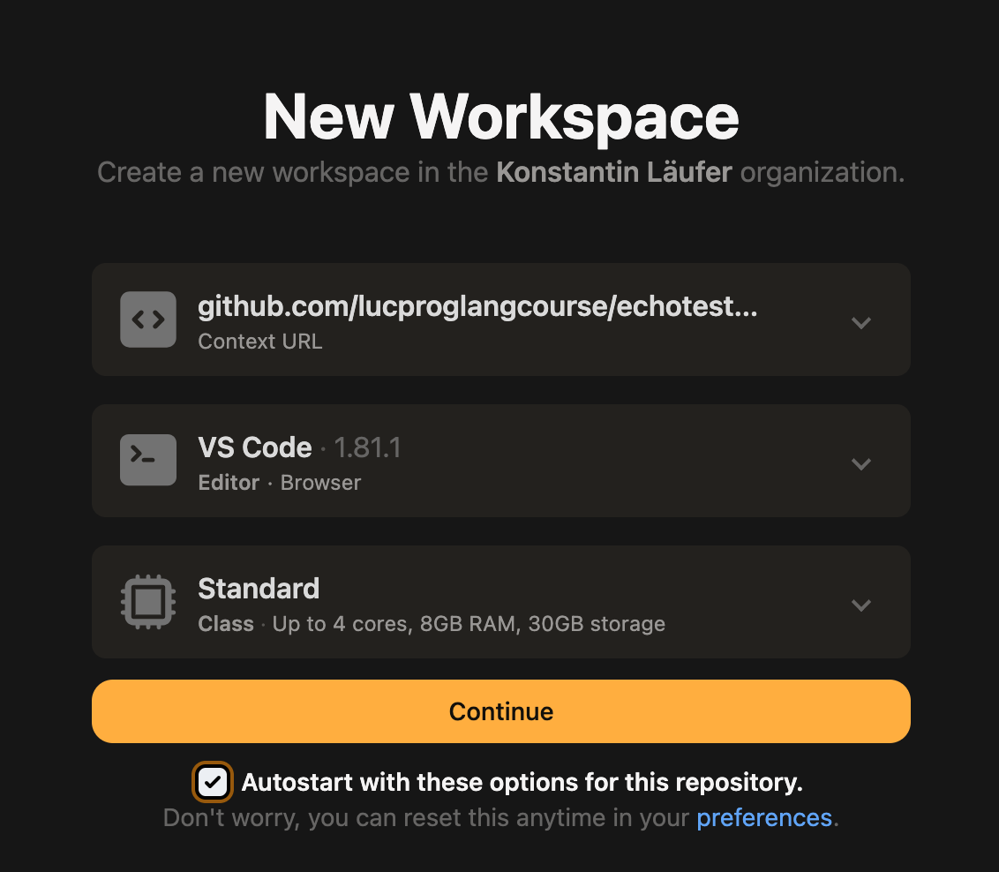

10. Appendix: Course Software
You can choose either or both of the following options.
10.1. Cloud-based development environment
This option is recommended if you have any problems with your local setup or if you prefer a basic cloud-based setup.
10.1.1. Pros
consistent, cloud-based environment
10.1.2. Cons
requires good network connection
might lack code completion
free plan might be underresourced (CPUs, RAM, disk space, etc.)
won’t support GUI or mobile development out of the box
10.1.3. Zero-install option: Scastie
Scastie is an interactive playground for Scala with support for Scala 3 and sbt (Scala Build Tool) configuration. It allows you to save code snippets to your GitHub account, which you can access later. It is not suitable for working on full-fledged Scala projects, however.
To launch, visit https://scastie.scala-lang.org. Be sure to
choose target Scala 3 and Scala version 3.3.0
add the following scalacOptions under build settings:
"-Yexplicit-nulls", "-language:strictEquality"
10.1.4. Gitpod (recommended)
Gitpod is a cloud-based development environment based on Visual Studio Code running on Ubuntu LTS.
To launch, visit https://gitpod.io and log in using your GitHub account.
The first time around, create a new workspace and select the GitHub project (or paste the URL of a GitHub project) you want to work on in the new workspace; you should see this kind of configuration page:
When you visit Gitpod again, your GitPod landing page will show your existing workspace(s) along with the option to create a new one.
For each new workspace, using the installed SDKMAN!, perform a one-time installation of java and sbt (unless the project is already configured to perform these steps automatically).
The VS Code Scala and Metals extensions seem to get installed automatically; otherwise you can install them manually along with any other desired extensions.
Now you should be able to work on the project by using the hamburger menu in the top left corner to open a terminal and following the instructions in the included README.
Sometimes Gitpod loses changes made to the workspace itself, such as installing packages via
sdk. For example, it might no longer findsbt. In these cases, simply rerunsdk install sbtandsdk install java.The Live Preview <https://marketplace.visualstudio.com/items?itemName=ms-vscode.live-server> extension is recommended for opening HTML files directly within Gitpod.
10.2. Locally installed development environment
This option will give you an advanced development environment with code completion, type info, etc.
10.2.1. Pros
provides powerful capabilities, including code completion
does not require network connection once installed
10.2.2. Cons
might be slow on older machines
need to maintain on each machine you use
it can be challenging to match the versions of the various packages
10.2.3. Required packages
Git distributed version control system (usually preinstalled on Mac OS and Linux)
recommended installation option on Windows: Use Git and optional UNIX tools from the Windows Command Prompt
optional on any plaDecimaltform, especially when not using IntelliJ IDEA: some GUI-based Git client
sbt Scala build tool
VisualVM visual heap profiling tool
Mac and Linux users are strongly encouraged to use SDKMAN! to manage their Java, sbt, VisualVM, and other command-line development tools.
10.2.4. Choices of development environments
IntelliJ IDEA CE integrated development environment (recommended)
check specific prerequisite details for your platform
for the following steps, make sure you have no projects open and are looking at the welcome window as in the attached screenshot
Scala plugin installation: IntelliJ IDEA > Configure (bottom right) > Plugins > Browse repositories > find and right-click Scala > download and install > close repository browser > OK to restart IDEA Because Scala 3 is still evolving, JetBrains recommend setting the IntelliJ Scala plugin to the nightly channel for more frequent updates. For details, visit this blog post.
JDK configuration: IntelliJ IDEA > Configure > Project Defaults > Project Structure > Platform Settings > SDKs > + > JDK > navigate to the installation directory of your most recent JDK > OK
Visual Studio Code alternative based on your preference and/or experience
it should offer to install Scala support when you open a Scala project folder for the first time
conventional text editor
Emacs
vim
etc.
10.3. sbt optional plugins
This section applies to all uses of sbt, whether cloud-based or on the local command line.
These are useful additional sbt plugins. You can install them per project or globally. Many of the example projects already come with one or more of these plugins (especially the first two).
sbt-native-packager: creates a script for running your app outside sbt
sbt-scoverage: uses Scoverage to produce a test code coverage report
sbt-updates: checks central repos for dependency updates
sbt-scalafmt: automatic source code formatting using Scalafmt
scalastyle: static code checker for Scala
wart remover: code linting tool (another static checker)
10.4. GitHub
GitHub is a provider of hosted Git repositories, which emphasizes community and collaboration. For this reason, we use it to host our course examples.
Create a GitHub account if you don’t already have one.
Get the GitHub Student Developer Pack using your official
@luc.eduaddress. This will give you free unlimited private repositories.Find and follow a few practitioners you respect. For example, I follow these developers. You’ll probably recognize a number of them.
Review these notes to understand the community-based development process.
For credit toward class participation, create some meaningful GitHub issues and/or GitHub pull requests for one or more of our course examples. (Make sure to navigate to the original repos as these forks do not have their own issue trackers). These can be functional or nonfunctional enhancements, requests for clarification, etc.
To enhance your visibility in the professional community, start doing the same for some open-source projects you are interested in.
You may find both of these cheat sheets useful:
10.5. Remote participation
This software allows you to participating in class remotely in case of weather emergencies, pandemics, etc. For security and privacy reasons, be sure to update it frequently.
In case of a Zoom outage, we will fall back to MS Teams chat and reorganize from there.